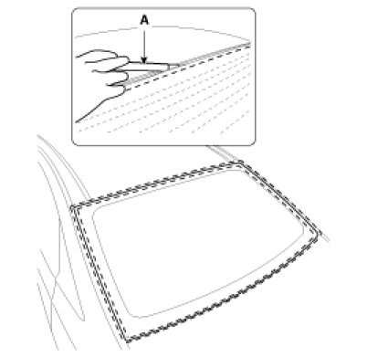
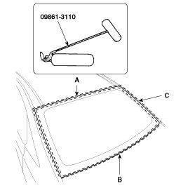
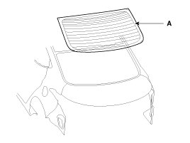
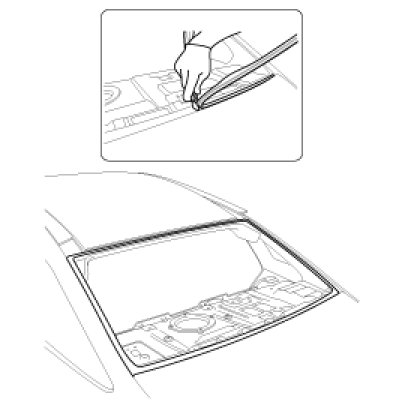
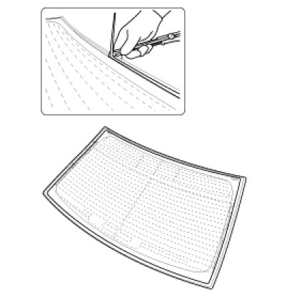
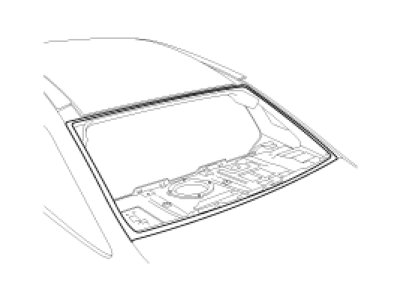
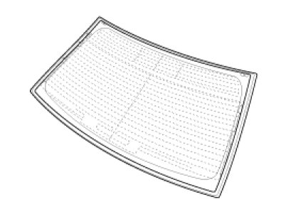
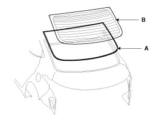
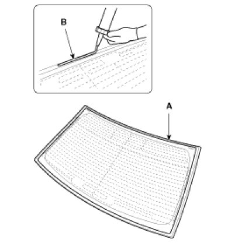
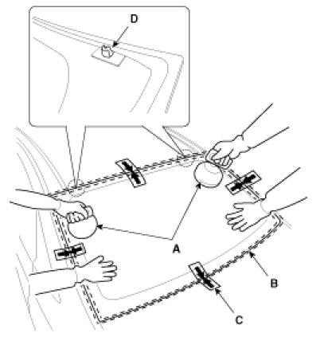

Repair Procedures
Removal
CAUTION:
- Put on gloves to protect your hands.
- Be careful not to damage the painted surface.
1. Remove the following items.
A. Rear seat
B. Rear pillar trim
C. Rear door scuff trim
D. Luggage partition trim
E. Rear wheel house trim
F. Package tray trim
G. Rear window glass heater connector
2. Spread the WD-40 on the side of rear window glass.
3. Cut out the adhesive using the cutter (A).
NOTE:
- Please use the cutter with a blade length between 8-12 inches.

4. Enough on the upper (A) and lower (B) side (C) of rear window glass. and then cut out the adhesive using the cutter tool (09861-31100).

5. Remove the rear window glass (A).
NOTE:
- When removing and installing the rear window glass, an assistant is necessary.

Installation
1. With a knife, scrape the old adhesive smooth to a thickness of about 2mm (0.08 in.) on the bonding surface around the entire rear window glass opening flange :
A. Do not scrape down to the painted surface of the body; damaged paint will interfere with proper bonding.
B. Remove the rubber dam and fasteners from the body.
C. Mask off surrounding surfaces before painting.

2. Clean the body bonding surface with a sponge dampened in alcohol. After cleaning, keep oil, grease and water from getting on the clean surface.

3. With a sponge, apply a light coat of body primer to the original adhesive remaining around the windshield opening flange. Let the body primer dry for at least 10 minutes.
A. Do not apply glass primer to the body, and be careful not to mix up glass and body primer sponges.
B. Never touch the primed surfaces with your hands.
C. Mask off the dashboard before painting the flange.

4. Apply a light coat of glass primer to the outside of the fasteners.
A. Never touch the primed surface with your hand. If you do, the adhesive may not bond to the glass properly, causing a leak after the tailgate glass is installed.
B. Do not apply body primer to the glass.
C. Keep water, dust, and abrasive materials away from the primer.

5. Paste the rear window glass molding (A), and then install the rear window glass (B).

6. Pack adhesive into the cartridge without air pockets to ensure continuous delivery. Put the cartridge in a caulking gun, and run a bead of sealant (B) around the edge of the rear window glass (A) as shown. Apply the adhesive within 30 minutes after applying the glass primer. Make a slightly thicker bead at each corner.

7. Use suction cups (A) to hold the rear window glass (B) over the opening, align it with the alignment marks (C) made in step 15, and set it down on the adhesive. Lightly push on the windshield until its edges are fully seated on the adhesive all the way around. Do not open or close the doors until the adhesive is dry
NOTE:
- When installing the rear window glass (B), set the rear glass service hole (D) to the frame exactly.

8. Let the adhesive dry for at least 3-4 hour, then spray water over the glass and check for leaks.
CAUTION:
- Do not spray to adhesive area directly. Spray water over the glass and then spill water around the glass.
9. Areas may leak. Let the glass dry, then seal with adhesive.
CAUTION:
- Let the vehicle stand for at least four hours after glass installation. If the vehicle has to be used within the first eight, it must be driven slowly.
- Keep the glass dry for the first hour after installation.
- Please have the driver use caution and not drive vehicle along an uneven dirt road or drive violently.
10. Reinstall all remaining removed parts.
A. Rear window glass heater connector
B. Package tray trim
C. Rear wheel house trim
D. Luggage partition trim
E. Rear door scuff trim
F. Rear pillar trim
G. Rear seat